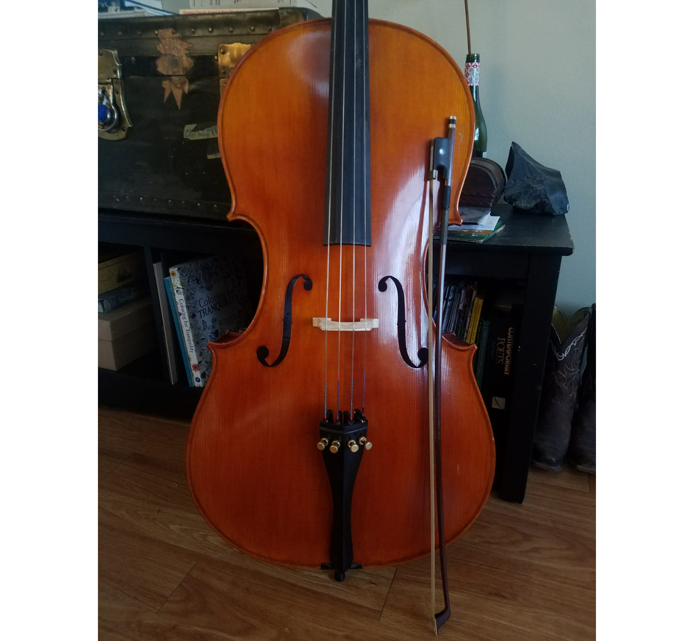
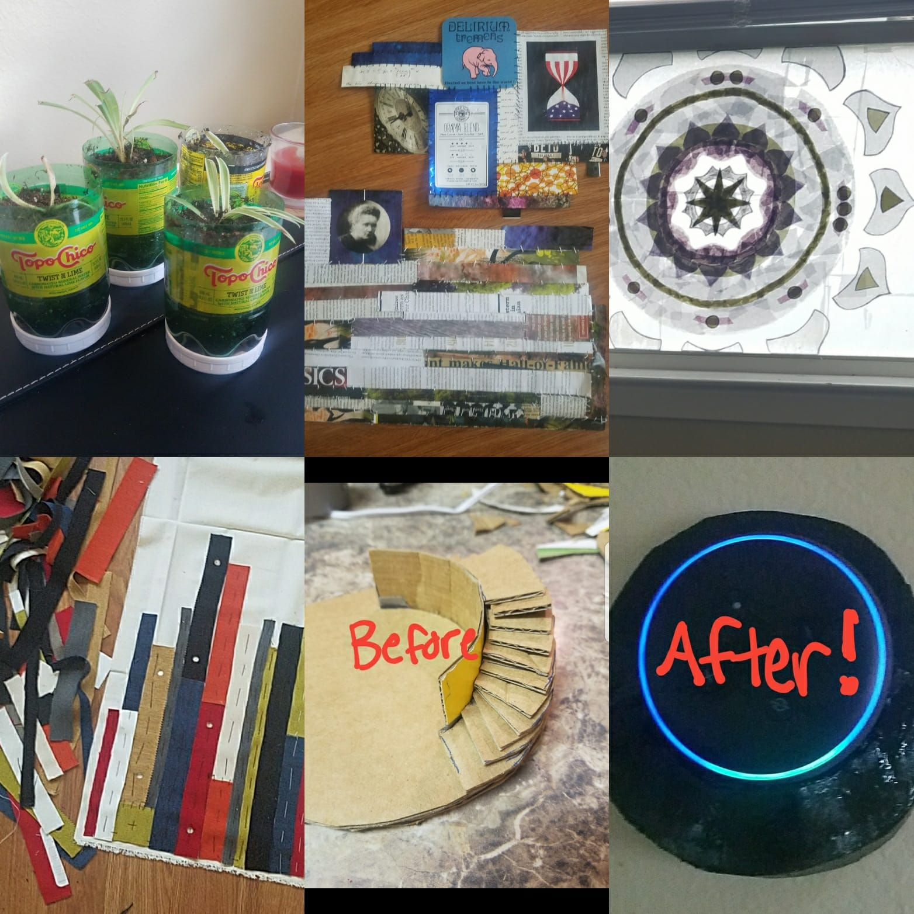

I've always loved to hand sew, but in January 2020 my family group-gifted me a Singer sewing machine! Since then, it's become one of my favorite hobbies. I'm slowly working through changing out my wardrobe with clothing that I have made. I also post updates about my sewing adventures on my Instagram.
I'm currently working on making a pirate shirt, so stay tuned!

I have been playing cello on and off for about 11 years (mostly off nowadays), although more professionally during my undergraduate tenure at Southwestern University (Georgetown, TX, USA). My favorite composer is Bach, because he understands the potential of cello the best and his music conveys this beautifully.

One of my favorite stress-relieving practices is crafting, particularly taking old unused things and working them into useful or beautiful things. I am a master builder when it comes to projects with cardboard – give me a challenge and I can make it using cardboard (see my Alexa Echo wall mount, made from cardboard :)